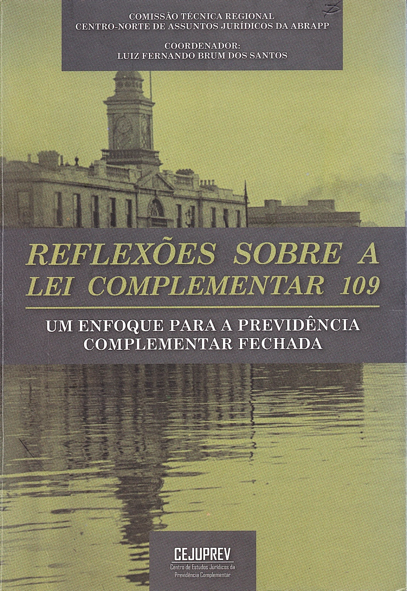
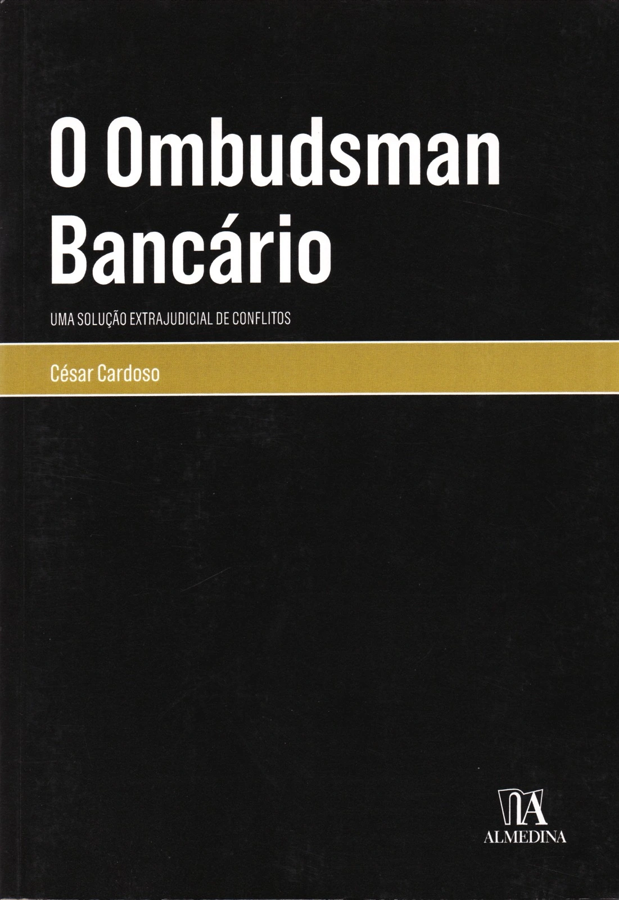

IMAGEM DO ARTIGO
Título do artigo em destaque
Resumo do artigo aparecerá aqui, com uma breve chamada sobre o tema abordado.
Ler artigoConhecimento técnico e reflexão jurídica: conheça as obras publicadas pelos nossos sócios e acompanhe nossos artigos.
Publicações que refletem a experiência dos nossos sócios em suas áreas de especialização.

Um Enfoque para a Previdência Complementar Fechada · coautoria de Diego da Silva Vencato
Obra que analisa em profundidade a Lei Complementar 109 e seus reflexos sobre o regime de previdência complementar fechada, reunindo perspectivas técnicas de diferentes autores.

Uma solução extrajudicial de conflitos · de Cesar Cardoso
A obra examina o alto custo do crédito no Brasil e aponta, entre suas causas relevantes, o expressivo volume de litígios levados ao Poder Judiciário, propondo a mediação como alternativa.
Resumo do artigo aparecerá aqui, com uma breve chamada sobre o tema abordado.
Ler artigoResumo do artigo aparecerá aqui, com uma breve chamada sobre o tema abordado.
Ler artigoResumo do artigo aparecerá aqui, com uma breve chamada sobre o tema abordado.
Ler artigo